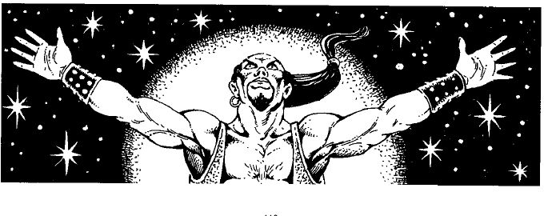

外层位面描述 · Outer Plane Descriptions
本节从秩序的尼瓦尔开始，沿外层位面车轮依次介绍主要位面。每个位面都有自己的层、居民、伟大力量和通道；下列描述是战役使用的基础，地下城主可以依照神祇、阵营和战役主题扩展。
河流与通道 Rivers and Conduits
斯提克斯河（River Styx）贯穿大多数下层位面。它从九层地狱流经格赫纳、塔纳厘、深渊、塔耳塔洛斯和潘德莫尼姆，最后进入混沌的更深处。饮用、浸泡或溺水会抹去记忆；受害者通常忘记自己的姓名、阵营和过去，直到接受恢复记忆的魔法。船只在斯提克斯河上很容易倾覆，河中生物和恶魔常把渡河者当成猎物。
奥刻诺斯河（River Oceanus）连接伊吕希昂、快乐狩猎场和奥林匹斯山。它在不同层之间流动，河水温和而明亮，但也有瀑布、急流和隐藏的航道。奥刻诺斯河没有斯提克斯河的记忆效果，却会把旅行者带入各个善良位面；船只和水生生物可能成为沿河冒险的主要遭遇。
外层位面之外 Beyond the Outer Planes
外层位面车轮并不一定是宇宙的边界。可能存在未被发现的层、隐藏的半位面、原初位面之外的世界，甚至与星界外层不同的空间。DM 可以把这些区域设计成独立战役世界，或让旅行者在多年后发现新的位面边界。

半位面可能位于以太位面中，也可能由强大生物、法术或伟大力量创造。它们可以小到一座房间，也可以无限扩展。位面手册提供的是已知世界的框架，而不是限制地下城主探索多元宇宙的边界。
本节内容